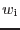
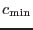

Although separate time series are made for each EPIC instrument, the same width is used for all, to facilitate comparison between instruments. Choice of the width is complicated by the possibility that, even though a source has passed the selection criteria outlined in subsection 3.2, the counts may be null for as many as 2 out of the 3 EPIC instruments. The algorithm which was chosen checks the instruments in turn in the sequence PN, M2, M1; the first instrument for which the count is neither zero or null is used to set a preliminary, integer-valued bin width  as follows:
where
 is the minimum acceptable counts per bin for instrument ii,  is the value of the ii_ONTIME column and
is the value of the ii_ONTIME column and  is ii_CTS; ii here is either PN, M1 or M2. At present,
is `hard-wired' to be 18 for PN and 5 for M1 and M2. The bin width is then rounded up to the nearest multiple of 10 seconds.
is ii_CTS; ii here is either PN, M1 or M2. At present,
is `hard-wired' to be 18 for PN and 5 for M1 and M2. The bin width is then rounded up to the nearest multiple of 10 seconds.